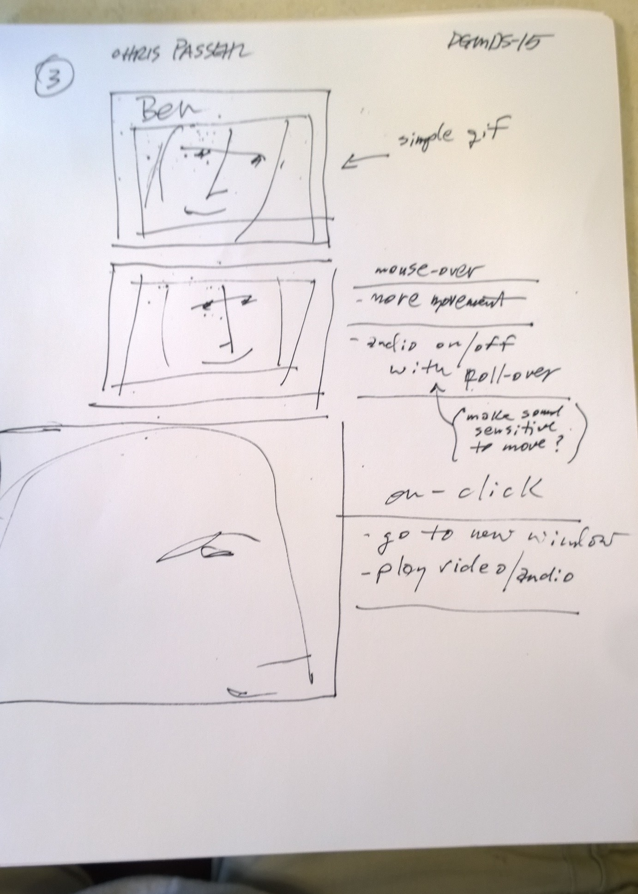
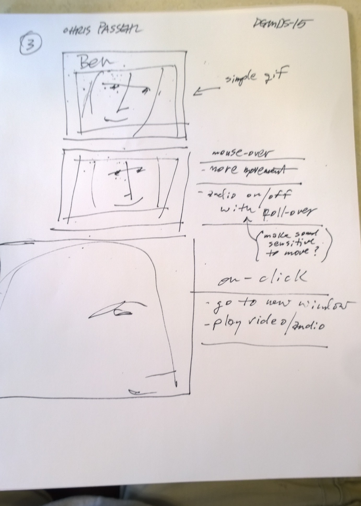
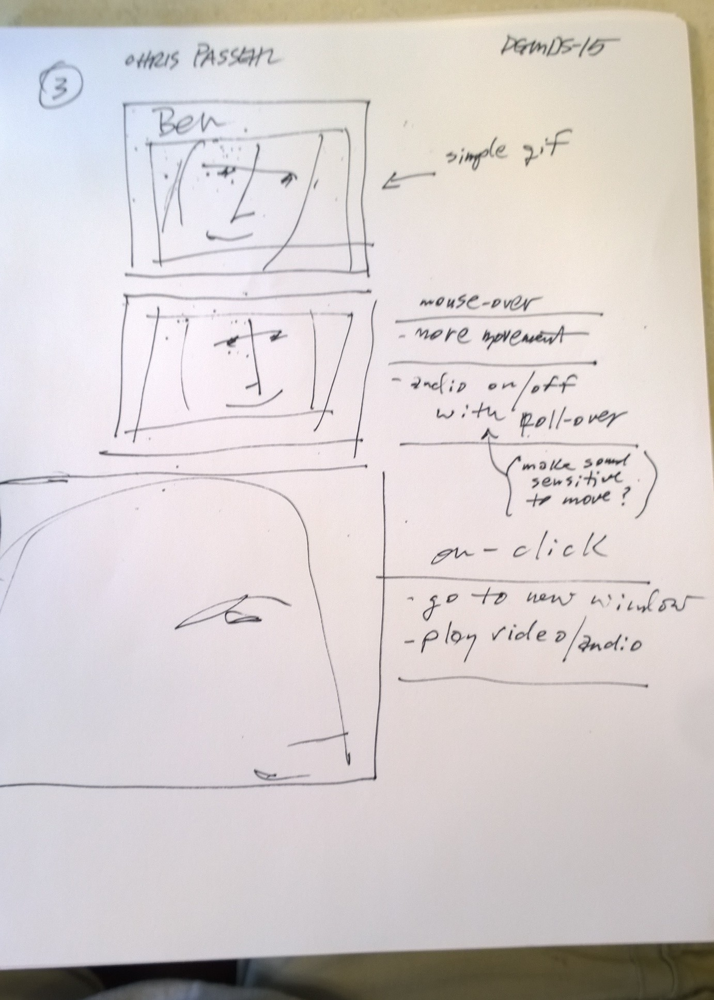

yesterday— Wed 6.220.2016— good class and lab. Photo is sky + treetops above harvard square

This is a great day to begin the journal!

 

christopher
passehl
yesterday— Wed 6.220.2016— good class and lab. Photo is sky + treetops above harvard square
This is a great day to begin the journal!
